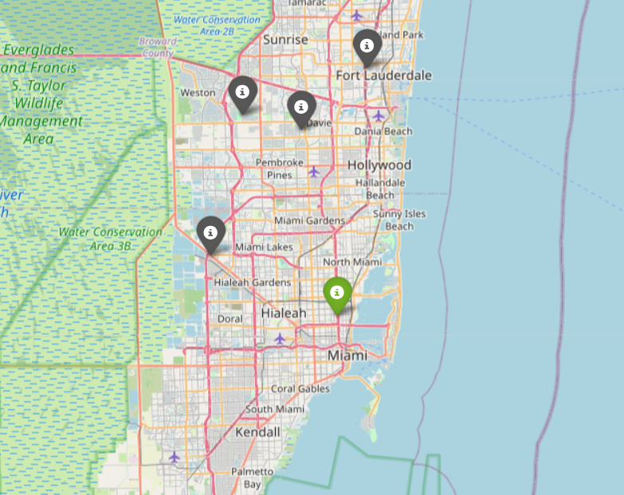

| Points Possible |
Due Date | Time Commitment (estimated) |
|---|---|---|
| 25 | Thursday, April 23 @ midnight | up to 15 hours |
GRADING: Grading will be aligned with the completeness of the objectives.
INDEPENDENT WORK: Copying, cheating, plagiarism and academic dishonesty are not tolerated by University or course policy. Please see the syllabus for the full departmental and University statement on the academic code of honor.
Explore air quality public dataset in Python and Pandas.
Build a distance table using Pandas.
Build a map of reference and Purple Air stations using Folium.
You will enjoy the highest benefits of the starter notebook if you clone the HW Github repository from your Jupyter Hub terminal with the command:
git clone https://github.com/kmhuads/s26_data203.gitThis will ensure you have the most updated files and starter notebook.
Once you have cloned the repository, you can edit the starter notebook with your solution code.
When you are done with your work, it will be best to zip your
hw2 folder and all sub-folders with the terminal command
(one level outside your notebook folder):
zip -r data203_hw3_maull.zip ./hw3This will produce the file with all necessary supporting files
(notebooks, data output, etc.) then download it from the Jupyter Hub to
your local machine, then upload the .zip to Teams.
If you are confused on how to do this, please ask, or visit one of the many tutorials on the basics of using zip in Linux.
If you choose not to use the provided notebook, you will still need
to turn in a .ipynb Jupyter Notebook and corresponding
files according to the instructions in this homework.
Now that we have learned a number of new concepts in Pandas is it time to apply them.
We are going to explore a few preliminaries before getting into our exploration and code solution.
You might already be aware of the work going on in CADSA and elsewhere to study the community-level impacts of high temperatures in urban environments, as well as how poor air quality significantly impacts the health of us all (but especially developing children and the elderly). You may also have some awareness that addressing these issues is as much a data problem as it is a political one – without appropriate data collection and analysis, very little can get accomplished at the policy level.
One source of data are government sources, such as the EPA (https://epa.gov) and as you may also be aware, data feeds for the EPA data products have been threatened in the recent past:
As a data scientist, we must be tirelessly curious and follow the data, wherever we can find it and wherever it may lead.
Being familiar with many datasets, large or small, and becoming curious about the contents and questions that can be asked about any data is a skill that will cultivate as it serves your future growth.
In the spirit of time, a large portion of the data acquisition has been done already, but the primary sources are still available for you to peruse. The two sources are OpenAQ and PurpleAir. OpenAQ is a website that aggregates global air quality data from a variety of sources, but of interest to us are the data about the reference or “government” monitors, as we will shortly see. PurpleAir is a company that sells air quality monitors which can continuosly collect and display real-time data about PM2.5 air quality parameters.
You are encouraged to independently explore these data sources.
In this assignment we are going to use Pandas to work through location data using these two data sources.
§ Task: 1.1 Install the OpenAQ Python module from PyPi.org.
You will need to install the openaq module with:
!pip install openaq§ Task: 1.2 Study the provided
fetch_openaq_data() function in the provided starter
notebook and describe what it does.
Write in your notebook what the function does. You will want to study the OpenAQ documentation here:
§ Task: 1.3 Execute the
fetch_openaq_data() function, study the output JSON file
and provide a brief description of its contents.
Your description should be understandable by one of your peers who has not taken this course. You must use plain descriptions without technical jargon, but you must provide enough information so that the description is useful.
You MUST use the following parameters when invoking the function:
lat = 25.986862lon = -80.208447outfile = "data.json"As a side note, the lat, lon given represents the location of an actual PurpleAir sensor in use by our partners in collaboration with Dr. Yeboah’s Core Futures Lab here at Howard.
You MUST also sign up for an API key here and use
the resulting key in your key parameter to the function
call:
We will extend the work we started in the first part and continue to explore the data, specifically, we now want to answer a very simple question:
Given the lat,lon information for a Purple Air location, where are the closest EPA regulation monitors.
This is a natural question, especially when trying to understand what coverage already exists and whether that coverage is adequate to assess actual air quality impacts for the communities of interest.
§ Task: 2.1 Build a table containing all the locations we want to compare. Explain the table,
You will need to study the provided function
build_location_table().
Finish the cell which loads the JSON file from the first part and
execute the function build_location_table().
Describe the output of the function. Be very descriptive of what the function does and what the output actually is.
§ Task: 2.2 Finish the function
implementation of build_distance_table().
Do not overthink this:
Study the implementation stub and finish it.
Your implementation will be a nested for loop that
will loop over all the values twice and create a list of the distances
using the haversine function.
For example,
haversine(i,j,Unit.MILES)computes the distance in miles between two (lat,lon) tuples i and j.
You will simply run a for loop inside of a
for loop which will append the computed distance to a list,
then pd.concat() on axis=1 to a new DataFrame
consisting of the list. Remember if you have a list lst,
DataFrame(lst) creates the new DataFrame that you will
concat.
§ Task: 2.3 Explain the output of
build_distance_table(build_location_table(pa_sensor, data).
Be descriptive but also use plain language that a non-expert would understand.
§ Task: 2.4 Answer the questions below based
on the n_closest code given in the notebook.
NOTE: The first parameter to the function is the
index of the location you want to build the table from. In the
questions below, please use the value 0, which is the index
of the Purple Air monitor in question.
Use the function to answer the questions:
For example,
n_closest(0, df, df_dist, n=-1, reference_only=True)returns all the reference station’s distances to
index 0 or the Purple Air station. The output is a
tuple with the index of the station and the lat, lon
coordinates.
We are almost there. What’s left is to leave the world of numbers and tables and create an interactive visualization.
The solution is scaffolded so you will have to do very little to complete the code. The goal is to see the map!
§ Task: 3.1 Install the Folium package from PyPi.
You will simply run:
!pip install folium§ Task: 3.2 Finish the code implementation.
Most of the code is completed for you in the starter notebook. You will just need to study the first bit of code that puts the marker on the map, then put it into the provided loop. There are hints in the starter notebook which should set you straight.
Your map will look something like:
